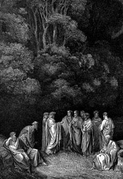

Dante se equivocaba, el Limbo no existe

Fue un engaño de Virgilio? Recordemos que Dante descendió al Infierno, pasó por el Limbo, luego estuvo en el Purgatorio y su querida Beatriz lo guió hasta el Paraiso.
La imagen que acompaña esta nota es uno de los hermosos dibujos de Doré para ilustrar la Divina Comedia. En esta se ve a Dante, Virgilio y varios personajes de la antigüedad, como Homero, Horacio y Ovidio.
Pero ahora resulta que el Vaticano anuncia que el Limbo no existe.
Lo bueno es que todos los niños que estaban en el Limbo pasaron al Cielo.
Pero, esperen, ¿qué pasa con Virgilio? se fue al infierno? ¿se lo merecerá por engañar a Dante?.
Mmmmm, y ¿ todos los que no conocieron a Cristo, que no eran niños al morir? ¿en donde quedaron?
Que bueno que no me dediqué a la Teología.…
Sin embargo el problema de los antiguos parece que no ha sido resuelto.
Hay una
entrevista
en BBCMundo al padre Samuel Fernández, decano de la Pontificia
Universidad Católica de Chile.
El Limbo nunca fue establecido como un dogma por la doctrina católica, este concepto es parte de la tradición, igual que los 3 reyes magos, por ejemplo (en la biblia no se especifica cuantos eran ni tampoco salen sus nombres).
Transcribo algunas preguntas
...
También se dice que Juan Pablo II empezó por desmontar la visión tradicional del cielo, el infierno y el purgatorio, que no son lugares físicos sino estados de ánimo. El cielo es la presencia de Dios, el infierno es su ausencia.
¿Quiere decir esto que podemos cada día, por nuestros estados de ánimo, estar más de una vez en el cielo y en el infierno?
No son estados de ánimo sino estados del alma. Es que nosotros como seres humanos nos creamos una representación mental, pensamos con categorías espacio temporales. Lo que dijo Juan Pablo II fue que no debemos identificar el cielo con la forma en que imaginamos el cielo.
Recuerdo que cuando salieron esas catequesis hubo mucho revuelo, pero no hay en realidad ninguna novedad teológica.
Si el cielo es la comunión plena con Dios, parecería que no es necesaria la muerte para esa comunión. Que puede llegarse al cielo en la vida del día a día, en esta Tierra.
La plenitud total sólo se da después de la muerte, pero nosotros aquí
experimentamos atisbos de esa comunión plena a través de nuestras
experiencias humanas: el amor, un logro, la comprensión más profunda de
las cosas.
Todas esas experiencias positivas son una chispa, una preparación para
la comunión plena.
La doctrina de la iglesia reconoce la libertad del ser humano. Si una persona actúa de una manera íntegra, de acuerdo a su corazón, aún cuando no exprese profesar ninguna fe, ¿no es este un camino hacia la comunión plena? ¿No hay, más allá de los sacramentos, otros caminos de salvación?
Por la encarnación, Cristo se ha unido a cada ser humano, hay una orientación de la humanidad hacia Cristo, aún inconscientemente. Está el bautismo de deseo, y finalmente el mismo Santo Tomás de Aquino dice que la gracia no está encadenada a los sacramentos.
Dios tiene la capacidad de actuar de la manera que quiera. Naturalmente que la misericordia de Dios llega mucho más lejos de lo que llegan nuestras ideas.
Para finalizar, ¿si Dios llega mucho mas lejos de lo que llegan nuestras ideas, porque La Iglesia se siente con el derecho de interpretar y explicarnos como es el más allá?